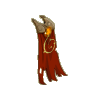
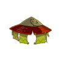
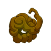
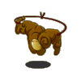
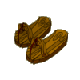
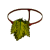

Menu barbok'you

| Niveau 142 | Cape Usées du Chene Mou | ||
|---|---|---|---|
|  | Recettes : | Caractéristiques : | Conditions : |
| 200 Ambres 5 Ambres d'abraknyde sombre 5 Ecorces du chêne mou 4 Racines du chêne mou 1 Bourgeon du chêne mou 1 Abracape 1 Abracapa 1 Abracapa ancestrale |
+201 à 250 vitalité +26 à 40 intelligence +26 à 40 force +16 à 25 sagesse +4 à 6 dommages +11 à 15 prospection +5 à 7 résistance terre +5 à 7 résistance feu 4 à 6% résistance air 4 à 6% résistance eau 4 à 6% résistance neutre |
||
| Remarques : | |||
| Niveau 145 | Coiffe du Chene Mou | ||
|---|---|---|---|
|  | Recettes : | Caractéristiques : | Conditions : |
| 10 Racines du chêne mou 10 Champignons luidegît 10 Ambres d'abraknyde sombre 10 Ecorces du chêne mou 2 Ambres du chêne mou 1 Bourgeon du chêne mou 1 Abracaska ancestral 1 Abracaska |
+201 à 250 vitalité +31 à 50 intelligence +31 à 50 force +11 à 20% dommages +21 à 30 sagesse +6 à 8 dommages +4 à 5 soins +4 à 5 CC +6 à 10 prospection 4 à 5% résistance terre 4 à 5% résistance feu |
aucune | |
| Remarques : | |||
| Niveau 139 | Anneau du Chene Mou | ||
|---|---|---|---|
| Recettes : | Caractéristiques : | Conditions : | |
|  | 5 Racine du chêne mou 4 Ecorce du chêne mou 3 Bois envoûté 1 Abranneau mou 1 Abranneau sombre 1 Abranneau 1 Ambre du chêne mou 1 Anobra |
+101 à 150 vitalité +21 à 30 force +21 à 30 intelligence +16 à 25 sagesse +1 à 2 CC +6 à 10 prospection +4 à 6 dommages 4 à 6% résistance feu 4 à 6% résistance neutre 4 à 6% résistance terre |
aucune |
| Remarques : | |||
| Niveau 138 | Talisman du Chene Mou | ||
|---|---|---|---|
| Recettes : | Caractéristiques : | Conditions : | |
|  | 30 L'araknamu 25 Bourgeon d'abraknyde sombre 10 Ecorce d'abraknyde sombre 5 Bois envoûté 5 Racine d'abraknyde sombre 3 Ambre d'abraknyde sombre 2 Ambre du chêne mou 1 Torque ancestral |
+1 PA +151 à 200 vitalité +26 à 40 intelligence +26 à 40 force +16 à 25 sagesse +11 à 15 prospection +6 à 10 dommages +6 à 8 soins +201 à 300 initiative |
aucune |
| Remarques : | |||
| Niveau 136 | Tongues du Dimanche du Chene Mou | ||
|---|---|---|---|
| Recettes : | Caractéristiques : | Conditions : | |
|  | 40 Bois de kaliptus 35 Bourgeons d'abraknyde sombre 25 Ecorces d'abraknyde sombre 20 Racines d'abraknyde sombre 4 Racines du chêne mou 3 Ecorces du chêne mou 1 Abrabottes 1 Protege-tibias Ancestraux |
+1 PM +151 à 200 vitalité +31 à 40 intelligence +31 à 40 force +21 à 30 sagesse +6 à 10 dommages 6 à 10% dommages +6 à 10 prospection 4 à 6% résistance feu 4 à 6% résistance terre |
aucune |
| Remarques : | |||
| Niveau 141 | String Automnal du Chêne Mou | ||
|---|---|---|---|
| Recettes : | Caractéristiques : | Conditions : | |
|  | 130 Ambre d'abraknyde 50 Bourgeon d'abraknyde sombre 25 Ecorce d'abraknyde sombre 20 Racine d'abraknyde sombre 9 Ecorce du chêne mou 8 Racine du chêne mou 1 Abrature 1 Abrature ancestrale |
+151 à 200 vitalité +26 à 40 force +26 à 40 intelligence +11 à 20 sagesse +3 à 4 CC +6 à 10 dommages +3 à 4 soins +1 portée +11 à 15 prospection +101 à 200 initiative +501 à 600 pods +6 à 10 résistance air +6 à 10 résistance neutre |
aucune |
| Remarques : | |||
| 1 Items | Aucun bonus |
|---|---|
| 2 Items | +20 Vitalité |
| 3 Items | +40 Vitalité / +1 dommage / +1 soin |
| 4 Items | +60 Vitalité / +2 Dommages / +2 Soins / +10 Sagesse |
| 5 Items | +80 Vitalité / +3 Dommages / +3 Soins / +20 Sagesse / +10% Dommages |
| 6 Items | +100 Vitalité / +4 Dommages / +4 Soins / +30 Sagesse / +20% Dommages / + 1 PM |
Dofus est un MMORPG édité par Ankama." Barbok " est un site non-officiel sans aucun lien avec Ankama.
Toutes les illustrations sont la propriété d'Ankama Studio et de Dofus. Le contenu de ce site a été rédigé initialement par Immortal, il ne s'agit que d'une remise en ligne effectuée par Eternal Games.